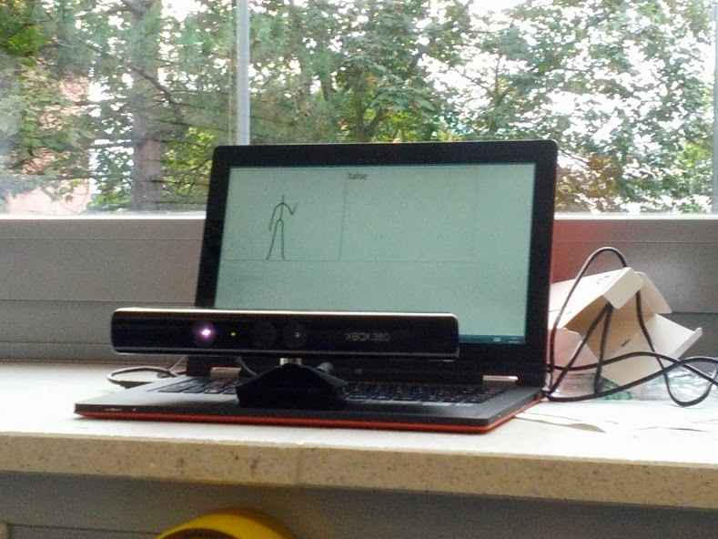

In unserer Schulwoche haben wir uns damit beschäftigt, eine XBox Kinect mit dem Computer zu verbinden, das Kinect SDK für VisualStudio zu installieren und mit dessen Hilfe eine eigene Software zu erstellen. Unser Ziel war es, mit Handzeichen den Mauszeiger des Computers steuern zu können.
Foto vom Aufbau:
Der Quellcode kann aus unserem GitHub Repository unter https://github.com/ovm-ks/KinectMouseControl bezogen werden.